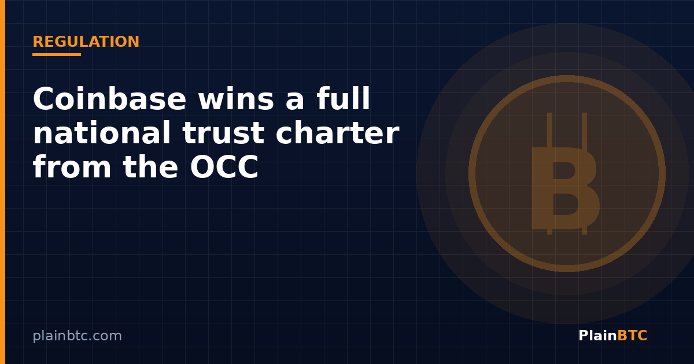

Coinbase wins a full national trust charter from the OCC: what it means

Coinbase, the largest U.S. crypto exchange, said Monday that its custody arm is now a fully chartered national trust bank. In a Nov. 9 company blog post, Coinbase said the Office of the Comptroller of the Currency (OCC), the federal regulator for national banks, approved its application to charter Coinbase National Trust Company last Friday. Reports citing OCC licensing records put the completion date at Nov. 6, 2026.
The decision upgrades the conditional approval Coinbase received on April 2. It does not turn Coinbase into a regular bank, but it does put its institutional custody business, where it safeguards crypto for funds and other large clients, under direct federal supervision.

Key takeaways
- The OCC gave Coinbase National Trust Company final approval, upgrading an April conditional approval.
- The charter covers fiduciary custody of digital assets, mainly for institutional clients.
- It does not allow ordinary retail deposits, lending, or stablecoin issuance.
- Coinbase plans to move its New York-regulated custody business into the national trust over three years.
What a national trust charter is
A national trust bank is a narrow kind of bank. It can hold and manage assets for clients as a fiduciary, meaning it has a legal duty to act in their interest, but it is not a full-service commercial bank. According to Bitcoin Magazine and crypto.news, the Coinbase trust cannot take ordinary retail deposits or make loans, and the charter does not authorize it to issue stablecoins.
Coinbase said custody is “foundational” to its business and that it has safeguarded digital assets for more than 14 years. The company wrote that the charter “allows us to bring clear and consistent federal uniformity to our industry-leading custody capabilities.” Vice Chairman Ryan VanGrack told CoinDesk the approval is “another major step in integrating digital assets into the core infrastructure of the American financial system.”

Conditions attached
The OCC’s April decision, which set the terms for the final approval, comes with guardrails. Reports say the trust bank must hold at least $60 million in Tier 1 capital, a core measure of a bank’s financial cushion, and keep enough liquid assets to cover 180 days of operating expenses during its first three years.
Services such as staking, prime trading and financing will keep running through other Coinbase companies, not the trust itself; the trust can act as an intermediary that connects custody clients to them. The charter also does not automatically plug Coinbase into Federal Reserve payment systems. That would require a separate application under the Fed’s account access guidelines.
Coinbase already runs custody through Coinbase Custody Trust Company, a limited-purpose trust overseen by the New York State Department of Financial Services since 2018. The company plans to shift that business into the new national entity over three years.
Part of a wider trend, and some pushback
Coinbase is not alone. Ripple received a full OCC trust charter in October, and many other crypto firms have applied for or received conditional trust charters, a trend that sped up after the GENIUS Act created a federal framework for stablecoins. CoinDesk noted that the OCC also granted conditional trust status to World Liberty Financial, the crypto venture linked to President Donald Trump’s family.
Traditional banks are not all on board. The Independent Community Bankers of America has sued the OCC, arguing the agency is overstepping its authority by granting trust charters to crypto companies. How that case plays out could affect how far this wave of charters goes.
What it means for everyday users
For most individual investors, nothing changes overnight. The charter is aimed at institutional custody, not retail accounts. Indirectly, though, it matters: many spot bitcoin ETFs rely on large custodians, and federal oversight of a major custodian is one more step in blending crypto into mainstream finance. If you simply want to buy a small amount of bitcoin, you would still use a regular exchange account, such as one opened on Coinbase, and it’s worth reading how custody works on whatever platform you choose.
What to watch next
- The timeline for moving Coinbase’s New York custody business into the national trust.
- Whether Coinbase applies for a Federal Reserve master account.
- The outcome of the community bankers’ lawsuit against the OCC.
- More crypto firms turning conditional trust approvals into full charters.
New to crypto? Our beginner guide to buying bitcoin on Coinbase.
Want a regulated U.S. crypto account?
If you’re ready to buy your first bitcoin, you can open a Coinbase account with our referral link. Eligible new users may receive a bonus after a qualifying trade; terms vary by country and can change.
Sign up on Coinbase with this linkNot financial advice. This article is for informational and educational purposes only. It is not investment, trading, legal, or tax advice. Cryptocurrency is volatile and you can lose money. Do your own research and consider speaking with a qualified professional before making financial decisions.
Sources
- Coinbase blog — Coinbase launches National Trust Company (Nov 9, 2026)
- CoinDesk — Coinbase gets full U.S. trust charter from federal banking regulator (Nov 9, 2026)
- Bitcoin Magazine — Coinbase wins full OCC national trust charter (Nov 9, 2026)
- crypto.news — Coinbase wins full US banking approval, but with key restrictions (Nov 9, 2026)